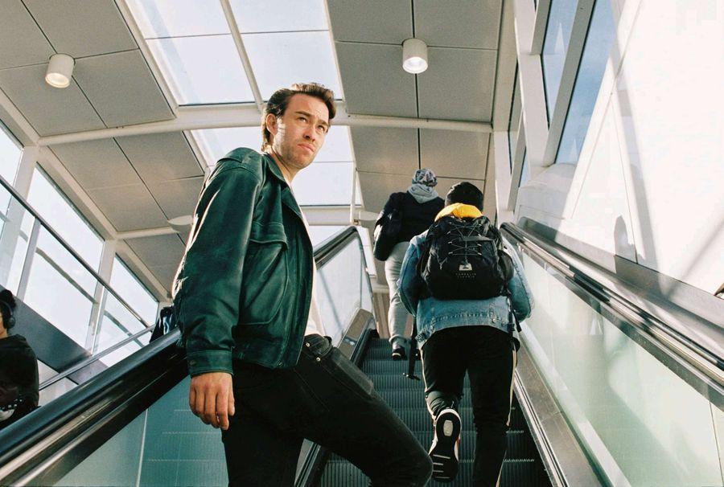
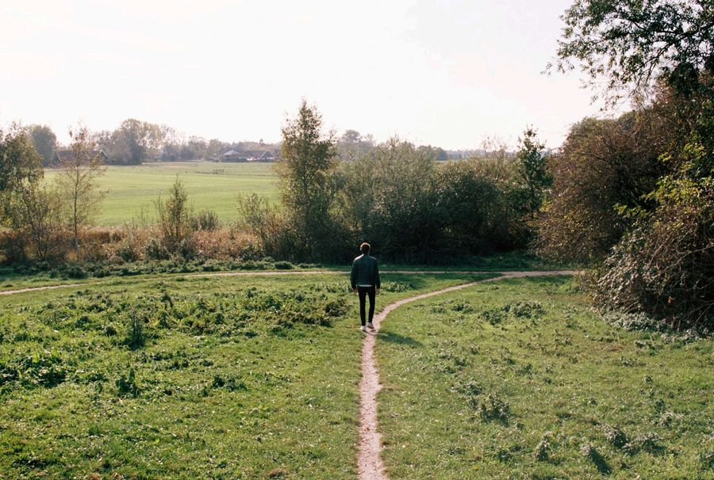
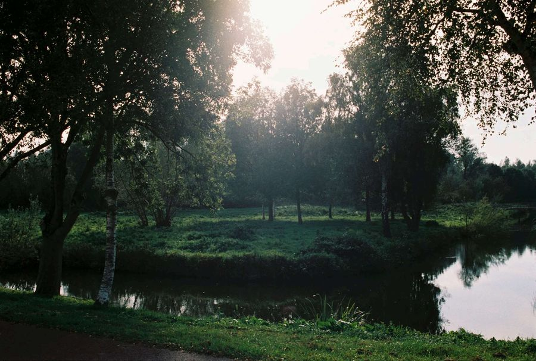
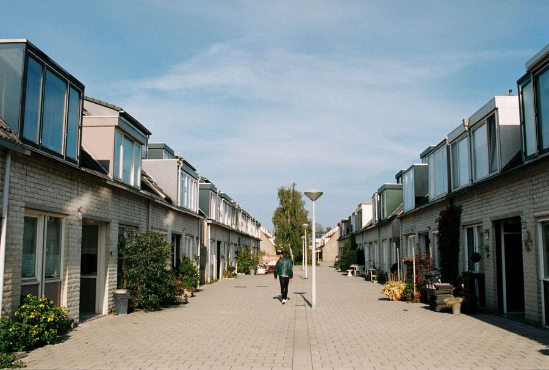
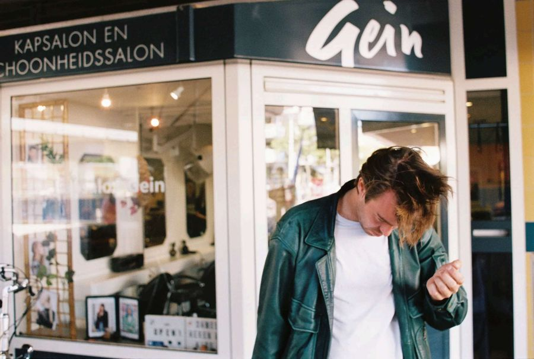
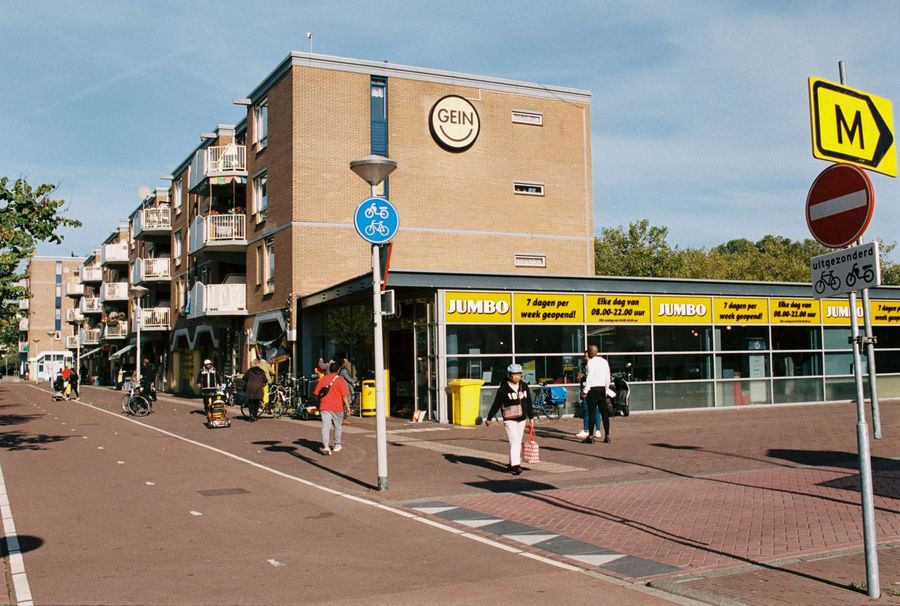
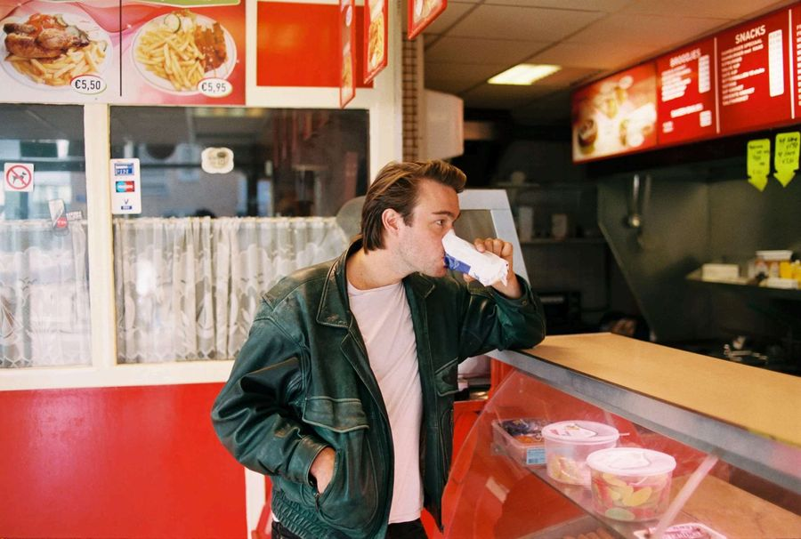
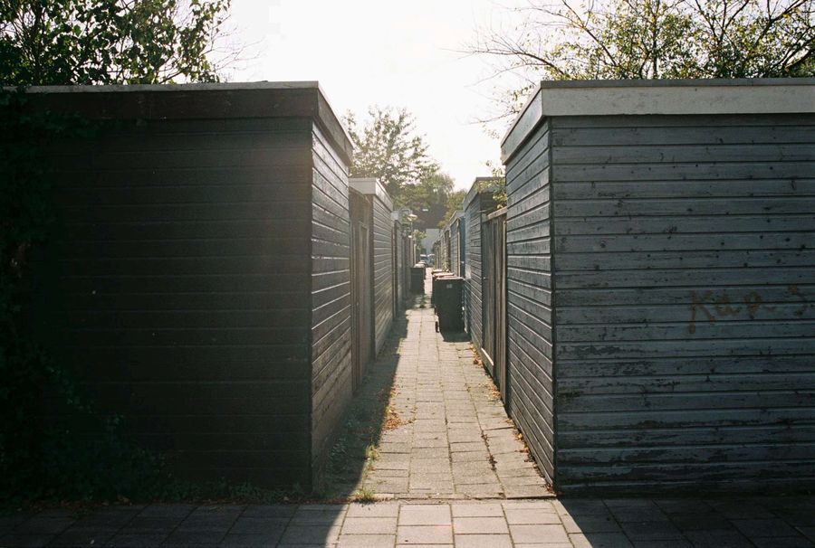
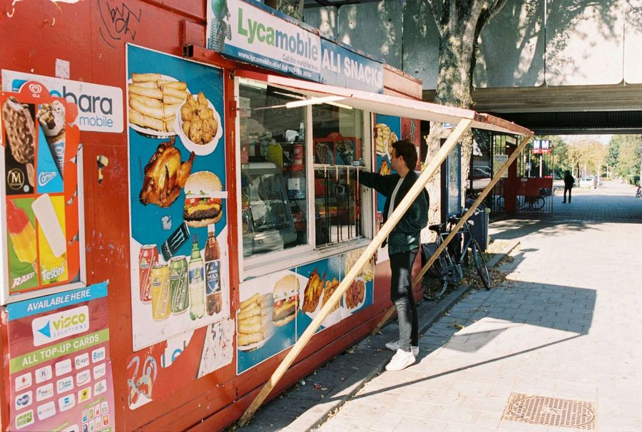
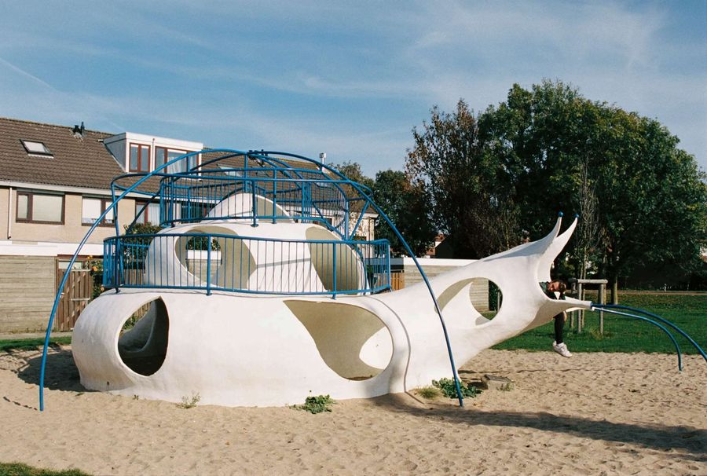

In deze serie gaat fotograaf Latoya van der Meeren samen met een VICE-schrijver terug naar de plek waar hij of zij opgroeide, om een tour te krijgen langs de plekken vol warme herinneringen, ongemak en betekenis. In deze aflevering gaat Ewout terug naar Gein, zijn wijk in Amsterdam-Zuidoost.
Mensen, vaak mannetjes, die opgewonden of ontroerd raken door stoomtreinen of dure auto's heb ik nooit begrepen. Liefde voor transport heb ik nooit gevoeld en zelfs een beetje geminacht. Alleen voor de metro koester ik een gekke, diepgewortelde liefde. Niet voor de huidige, naar Cif ruikende supertram, trouwens. Het vervangen van het oranje-zilveren koekblik, dat tot 2015 op lijn 54 reed, voelde als de definitieve poetsbeurt die van Amsterdam een soort Utrecht-plus maakte: schoon, mooi, braaf. De oude metro, de Zilvermeeuw, rammelde. Heel soms rook-ie naar suikerspin, wanneer een paar jongens om te etteren een kilozak suiker in de verwarming hadden gegooid en de hele wagon blauw stond. Maar meestal rook-ie naar metro: muffig, een beetje naar pis, soms naar inkt.

De metro was de brug tussen eindhalte Gein, waar ik ben opgegroeid, en mijn middelbare school in Zuid, de coffeeshop bij Waterlooplein, nachtwinkel Sterk, mijn vrienden die in het centrum woonden, de rest van de wereld. Eigenlijk was de metro een verlengstuk van Gein, een bewegend deel van mijn wijk in Amsterdam Zuidoost.
Ik dronk er mijn eerste alcohol en ging ermee naar mijn eerste schooldag. Ik zag ooit hoe een oud-klasgenoot na de huldiging van Ajax, hangend aan twee stangen, met beide voeten een compleet metroraam uit z'n voegen stampte, dat zodoende in de donkere bosjes langs het spoor belandde. Hoe een maat van z'n verfstiften werd beroofd door een grote gast, die een kloddertje verf op z'n broek had gespot en vermoedde dat hij dan vast ook wel een paar stiften op zak had. Gezien zijn anabolen-nek en gewelddadige reputatie was ik daarna altijd beducht voor inktvlekken op m'n kleren. Op een vroege vrijdagmiddag in de vierde, nadat ik een zak wiet had leeg gestoomd omdat het laatste proefwerk erop zat, werd ik wakker met de trapper van mijn fiets vlak voor m'n neus. Ook flauwvallen deed ik voor het eerst in de metro.

Gein en ik zijn even oud. M'n ouders gingen er wonen toen de wijk net af was; ik was toen een paar maanden. Dat schept niet per se een band tussen mij en mijn buurt, zoals bij menselijke leeftijdsgenoten, maar wel tussen de mensen die er eind jaren tachtig gezamenlijk heen verhuisden en elkaars buren werden.
Er was in de eerste jaren haast niks, dus elke kruiwagen en ladder werd met de hele buurt gekocht. Ik kende alle buren in de straat, op oudjaarsavond kwamen ze allemaal bij ons thuis drinken en haring eten. Over het fietspad waar ik en m'n vriendjes uit de buurt speelden, scheurden elke dag groepen jongens op crossmotors langs, gevaarlijk hard, richting de zandbergen verderop om te crossen. Tot de dag waarop een groep buurmannen, waaronder m'n vader, ze met een stel keukenmessen in de hand verzocht op te sodemieteren.
Wanneer er brand was, meestal in het natuurgebied achter ons huis dat we 'het landje' noemden, of bij de Gaasperplas dat we 'het strandje' noemden, liep de hele buurt uit. Er was vaak brand. Vaak meerdere keren per zomer. Het waren de mooiste avonden, vol sensatie, roddels en een saamhorigheid die ik soms mis. De Bijlmerramp, die voor een rode gloed zorgde die we vanaf de straat konden zien, herinner ik me ook als zo'n avond.

Geografisch gezien woonde ik in zo'n beetje het laatste huis van Amsterdam. Gein ligt in het uiterste puntje van Zuidoost, en veel mensen kwamen er wonen omdat ze kinderen hadden die ze meer ruimte gunden dan dat er in even betaalbare stinkbuurten, dichter bij het centrum, aanwezig was. Geen kind in Amsterdam had zoveel ruimte als wij.
Ik was een natuurnerd die het liefst de hele dag voorntjes en modderkruipers uit de sloot viste, en grutto's van kieviten en scholeksters onderscheidde. Op een van de mooiste dagen uit mijn leven vond ik, hangend aan een tak, een koekoeksfluitje dat iemand had achtergelaten. Daarmee kon ik communiceren met de koekoek achter ons huis, die als het warmer werd heel hard begon te koekoeken – de eerste dag in de lente waarop we hem hoorden schreef ik ieder jaar op in het vogelboekje. Tot de hele wereld alleen nog maar om voetballen draaide, en we alleen de tijd die overbleef invulden met vlotten en hutten bouwen, skaten en oorlogje spelen.

Na de basisschool begon iedereen zich met andere dingen bezig te houden. Terwijl bijna mijn hele klas naar dezelfde middelbare school in de Bijlmer ging, drongen mijn ouders erop aan dat ik naar een kakschool in Amsterdam-Zuid ging. Een groter contrast tussen de Sonny's en Jordy's uit m'n vorige klas, en de verwende stadse jongetjes met soms een bekakte 'r', kon er niet zijn.
De paar klasgenoten waar ik aansluiting bij vond kwamen ook uit nieuwbouwwijken, hielden hun jas aan in de klas, tekenden op de tafels, stalen pakken papier uit de klas, en straalden een algehele mate van teringlijerigheid uit waar ik bekend mee was. Gaandeweg kreeg ik steeds meer stadse vrienden, en was ik op vrijdagavonden op huisfeesten of in de Melkweg te vinden, in plaats van aan het gamen of aan het hangen op de brug met m'n oude buurtgenoten.
Als ik ooit een identiteitscrisis heb gehad was het toen. Voor m'n nieuwe vrienden was ik een sukkel uit een dorp, die altijd weer met de laatste metro of de nachtbus terug naar huis moest. Voor leeftijdsgenoten uit Gein was ik een kakker geworden, en voor wie wist bij welke club ik voetbalde, Geinburgia in het dorpje Driemond, was ik een boer.

En dan was er nog de ghetto-status, die – vanwege het imago van de Bijlmer – door mensen van buitenaf al snel ook op de rest van Amsterdam-Zuidoost werd geplakt. Maar ook door mensen uit de buurt werd dit gecultiveerd. Nick, een vreemde knul uit de buurt wiens spierwitte huid verried dat hij zijn Surinaamse accent bewust had aangeleerd, stond vaak in z'n eentje op z'n bmx tegen een schuurtje in een steeg naast mijn huis geleund. Hij speelde net als ik bij Geinburgia, en als hij het aan de stok kreeg met een tegenstander gilde hij "Je weet niet waar ik vandaan kom!" Toen mijn vroegere beste vriendje, god hebbe zijn ziel, naar Vroomshoop, bij Zwolle, zou gaan verhuizen, vertelde hij me tijdens het legoën dat hij tegen de buurtjongens daar zou vertellen dat hij uit de Bijlmer kwam, om indruk te maken.

Ik vond het vooral tragikomisch – zeker ons gedeelte van de wijk, Gein 3 (Gein bestaat uit 4 delen), was vooral burgerlijk. Dichter bij de metro kon het wat meer spoken. Op het Wisseloordplein, het winkelcentrum, vond soms weleens een steek- of schietpartij plaats, en werd soms de geldautomaat naast de kapper uit de muur geploft. Toch voelde dat ver weg genoeg om me niet druk over te hoeven maken, en was ik banger voor klassieke jarennegentiggevaren als potloodventers en drijfzand. Ik zag weleens hoe een jongetje bij het metrostation een klap op z'n hoofd kreeg en z'n telefoon moest afstaan aan twee gasten, maar ik geloof niet dat ik me ooit echt onveilig heb gevoeld. Eén keer, vlak bij m'n huis, kwam een gastje dreigend aan m'n tas voelen. Toen ik hem vertelde waar ik vandaan kwam, en dat ik nog met hem in de D2 had gezeten, was het gauw afgelopen.

Als ik met de fotograaf een biertje bij de snackbar haal moet er een zakje om, voor als de politie komt zeuren. Ik vraag of dat vaak gebeurt, waarop hij zegt dat er elke week wel iets is. Hij begint over rapper Bolle, die twee weken eerder even verderop, in Venserpolder, werd doodgeschoten.

Het contrast tussen m'n oude buurt en m'n nieuwe leven nam grimmige vormen aan tijdens Luilak – de jaarlijkse traditie om op de laatste zaterdag voor Pinksteren 's ochtends heel vroeg de hele buurt wakker te maken. In Gein werd dit vrij groots gevierd, in de stad had niemand er überhaupt van gehoord. Als kleuter maakten we de buurt wakker met zelfgemaakte trommels en telefoonkaarten tussen de spaken van onze fiets. Toen we ouder waren werden er 's nachts in de hele buurt ramen ingesmeerd met boter, vuilnisbakken omgegooid, en sneuvelde er in sommige tuinen een bloempot. Het werd elk jaar iets erger. Er waren buurmannen, of verhalen over buurmannen, die tijdens Luilak de hele nacht opbleven om erop toe te zien dat hun tuin niet werd vernield. Van onze overbuurman weet ik dat hij daar een knuppel bij hanteerde.
Een van de laatste nachten dat ik eraan meedeed werden er her en der ruitjes ingegooid en brandjes gesticht. De Luilaknachten daarop was ik altijd met mijn nieuwe vrienden in cafés of discotheken in de stad. Een keer strompelde ik op zaterdagochtend straalbezopen de nachtbus uit en zag ik hoe er die nacht, wat blijkbaar de zaterdag voor Pinksteren was, was huisgehouden. Het glas in alle bushokjes lag aan diggelen, er liepen her en der plukjes jongens met capuchons op door de wijk, er zat overal verse graffiti op de muren en er reed politie.


Ik heb nooit echt diep in dat hele Geinse wijkgebeuren gezeten. Ik was te laf om echt naam te maken in de graffitiscene, dronk liever vaasjes binnen dan halve liters buiten, en probeerde op vrijdagavond liever te tongen in Paradiso dan van de brug in de sloot te poepen. Na een avond in de stad met een groep uit Gein ging in de nachtbus een joint aan, ondanks klagende passagiers, met het argument dat de chauffeur je er echt niet uit zet, en zo wel dan rook je je joint op en pak je gewoon de volgende bus. Een waterdichte redenering, maar te bot voor mij. Het was een van de laatste keren dat ik met hen de avond doorbracht.
Als ik tegen mijn vijftienjarige zelf zou zeggen dat ik tegenwoordig op tien minuten fietsen van het Leidseplein woon, zou zijn hart een sprongetje maken. Ik hou ervan om in de stad te wonen, naar een café te kunnen wandelen om Ajax te kijken en een haring op de markt te eten.
De Baarsjes is een leuke buurt, maar de mensen die er wonen zijn een beetje saai, en vooral heel erg hetzelfde. Dertigers en veertigers met goede banen, vooral. Zoals ik zelf. Het doet me vaker dan nodig terugverlangen naar een bepaalde mate van teringlijerigheid die ik ooit ben ontvlucht. Teringlijerigheid die, voor zover ik kan zien wanneer ik terug ben in mijn oude buurt, ook in Gein lijkt te zijn verdwenen. De bruggen zijn brandschoon, ik zie haast nooit pubers onder het viaduct hangen en er staan prachtige fietsenrekken onder het metrostation.
Met het afschaffen van de oude rammelmetro richting de wijk waar ik opgroeide, is iets verloren gegaan wat ik nu pas echt mis.